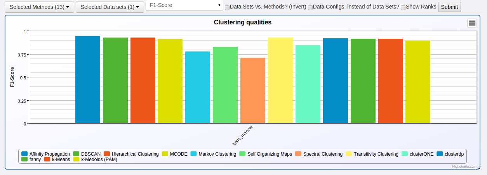
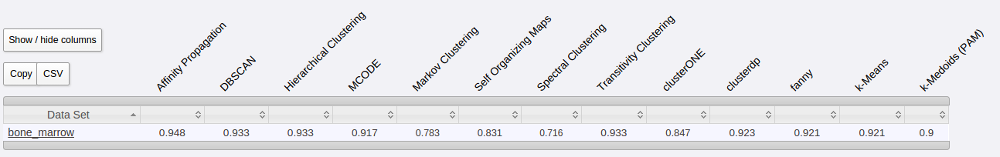
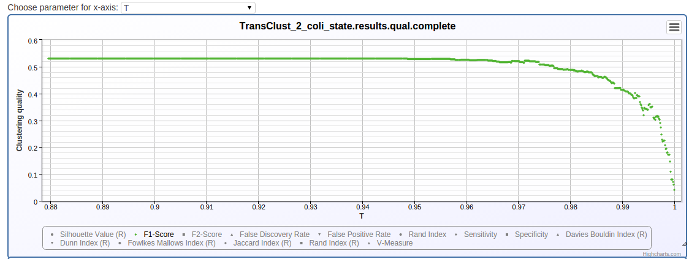
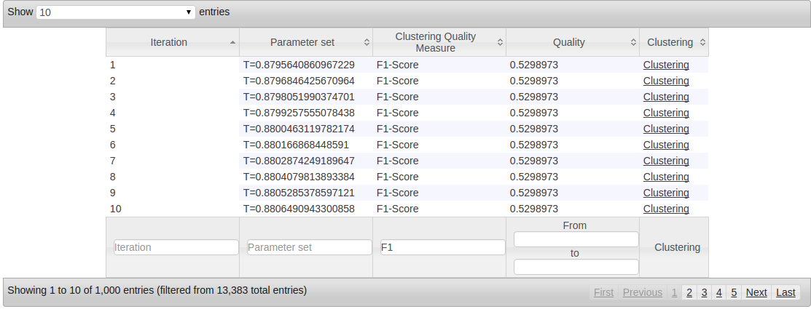

Basic Usage¶
The backend server and client are distributed as two Java executables which can be simply started with a single command in the command line. Both can be invoked with different command line parameters, which are explained here. For the following scenarios we assume, that you have followed the instructions under Download & Installation.
Here we assume, that you have cloned the
- clusteval GitHub repository to /home/clusteval/clusteval
- clustevalWebsite GitHub repository to /home/clusteval/clustevalWebsite
1. Check out a Minimal Repository¶
We provide a ready to use repository on GitHub. You can check it out using the git command line tool:
git clone https://github.com/wiwie/clustevalDockerRepository /home/clusteval/clustevalDockerRepository
2. Do you need the Website?¶
First you should be clear about whether you need the database + website. If yes you can continue with step 3. Otherwise, you can edit the repository configuration file under:
/home/clusteval/clustevalDockerRepository/repository.config
and remove the postgreSQL section. ClustEval will now not connect to a database.
3. Start the Backend Server¶
As mentioned above, the backend server is a Java executable (jar) and has several parameters. The parameters are described here. We use the repository from the previous step:
java -jar /home/clusteval/clusteval/clusteval/packages/clustevalBackendServer.jar --absRepoPath /home/clusteval/clustevalDockerRepository
If you are using a database at this point, you will be prompted for the credentials.
ClustEval will now start parsing the contents of the repository and will show you status messages in the terminal. Once it is finished, it will inform you that the server is now listening for clients commands.
4. Start the Backend Client¶
The client is a Java executable as well and can be started as follows:
java -jar /home/clusteval/clusteval/clusteval/packages/clustevalBackendClient.jar
It will now connect to the backend server and present you with a CLI to enter commands which will then be sent to the server. For example, you can get a list of all available runs in our repository:
getRuns
Afterwards you can perform one of those runs by entering:
performRun bonemarrow
ClustEval will now cluster the bone_marrow data set with DBSCAN, Fanny, KMedoids, K-means, Transitivity Clustering, Hierarchical Clustering, Affinity Propagation, Markov Clustering, Self Organizing Maps, Spectral Clustering, clusterdp, clusterONE and MCODE and 1000 parameter sets each. For each of the resulting clusterings it will evaluate the clustering quality measures which are specified in the run file (bonemarrow.run).
5. Getting the Status of the Run Execution¶
To track the progress of your run, you can either follow the status messages on the server terminal or use the client:
getRunStatus <RESULTID>
Here <RESULTID> is the unique identifier that your run execution was assigned. By typing getRunStatus into the client CLI, pressing tab will show you all available such ids. Which currently, should only be one for the bonemarrow run.
Since we are executing a run of type parameter optimization, we can also use the following command of the client to get a more detailed status:
getOptRunStatus <RESULTID>
6. Terminating a Run¶
If the run takes too long or you want to decrease the number of parameter sets (iterations) per clustering method, you first want to stop the running job, before editing the files and starting it again:
terminateRun <RESULTID>
7. Inspecting the Results¶
The results of a run can be either inspected using the client, the result files itself or the website (if the database and website have been set up and the repository.config contained a configuration for the database).
Using the Client¶
We can get a summary of the performances of each tool using the following command:
getOptRunStatus <RESULTID>
On the File-System¶
Each run execution is assigned a unique result id which you have already been using in the steps above. The results of a run are also stored under this result id on the file-system. If we want to inspect the results of our run, we can navigate to:
/home/clusteval/clustevalDockerRepository/results/<RESULTID>/clusters
This folder contains all the clustering results procuced by any of the clustering methods. Each *.complete file summarizes all iterations of one particular clustering method and makes it easier to identify parameter sets which performed better.
On the Website¶
If you have configured the server to run with a database connection, it will automatically parse the clustering results into the database once a run terminates.
You can then get a quick overview on the Overview page:
Start page -> Overview
Select the clustering quality measure on the top and you see which clustering method performed how well on the bone_marrow data set.
 {kind=link}
{kind=link}
To get more detailed information about the run, navigate to:
Start page -> Advanced -> Run results -> Click on result with <RESULTID>
The page shows you a section for each pair of program configuration and data configuration. The iterations of the parameter optimization are shown in a table and a chart.
 {kind=link}
{kind=link}